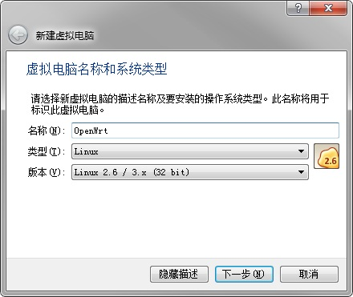
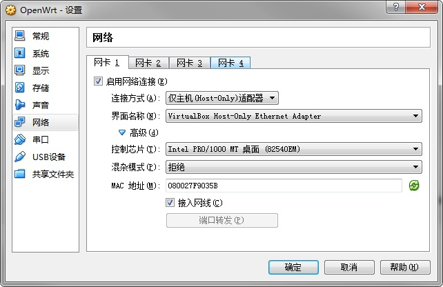
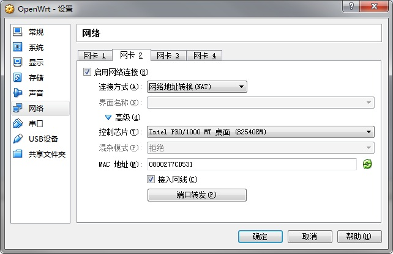
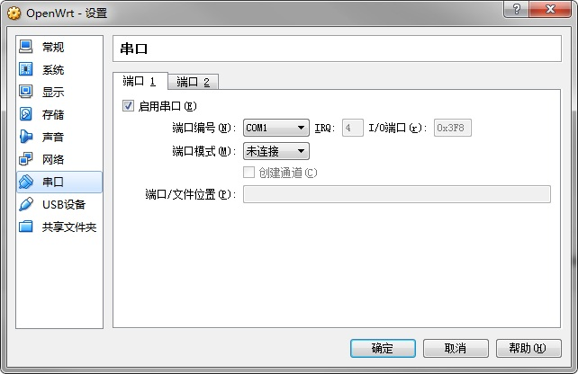

有时候可能需要测试一些东西，总是拿家里的路由器开刀的话会很危险，一不小心，家里全断网了，悲剧……还有一次不小打错了命令rm -r ….你懂的。这没什么，最麻烦的是要重装系统，各种配置，大半天就这么过去了。又不想为了这么点事再去买一台路由器，所以就萌生了用虚拟机安装OpenWrt的想法，想起以前开发Android的时候就用过VirtualBox虚拟Androidx86，那叫一个快啊，比Google提供的那个模拟器块至少10倍以上的速度，比真机还快。 有点扯远了，下面是VirualBox安装OpenWrt的方法。
1、准备工作
VirtualBox用的最新的版本4.3.28，官网下载即可。 OpenWrt固件用的是14.07的x86版本，到以下地址 https://downloads.openwrt.org/barrier_breaker/14.07/x86/generic/ 下载其中的openwrt-x86-generic-combined-ext4.img.gz 下载完成解压得到openwrt-x86-generic-combined-ext4.img文件，最好放到VirtualBox的安装目录，方便下面执行转换命令。 在VirualBox安装目录下执行
VBoxManager.exe convertfromraw –format VDI openwrt-x86-generic-combined-ext4.img openwrt.vdi
执行完成之后会在当前目录下生成openwrt.vdi，这一步是将img转换成VirtualBox可用的硬盘镜像.vdi文件。
2、安装OpenWrt到VirtualBox
首先新建一个Linux2.6 32位的虚拟机

后面一直默认设置下一步 到虚拟硬盘这步选择“使用已有的虚拟硬盘文件”，也是就选择在准备工作中生成的openwrt.vdi。
最后点击创建按钮，虚拟机就创建好了。
3、配置虚拟机
在主界面选中创建好的虚拟机，点击设置按钮，在设置界面选中网络，启用网卡1和网卡2 将网卡1的连接方式设置为“Host-Only模式”，界面名称设置为VirtualBox Host-Only Ethernet Adapter 网卡2的连接方式设置为“网络地地址转换(NAT)”


再开启一个串口，选择串口，将端口1启用

做完这些就可以启动虚拟机了，在VirtualBox主界面选中建立的虚拟机，点启动按钮。 在启动目录选择OpenWrt就可以进入系统了，差不多看到字幕不滚动时，记得回车，就会进入OpenWrt的终端模式。
TIPS：
这一步如果虚拟机出现Error In supR3HardenedWinReSpawn错误提示，可能是因为vboxdrv服务没有安装或没有成功启动，64位的系统经常出现这样的情况，可以找到VirtualBox的安装目录下的drivers/vboxdrv/文件夹，右键VBoxDrv.inf文件，选择安装，然后重启VirtualBox，应该就可以解决。
4、配置网络
刚进入系统应该是不能访问网络的，需要对网络进行配置。 在OpenWrt终端输入
1 | vi /etc/config/network |
关键修改下面高亮的部分，没有的话就添加，其中的config interface ‘wan’一般是没有的。
1 | config interface 'loopback' |
保存以后，重启network
1 | /etc/init.d/network restart |
然后ping下网外，看是否可以ping通，比如ping baidu.com 接下来通过ifconfig命令看看路由器的lan口ip是多少，由于这里使用的是Host-Only模式一般是192.168.56.101。 在浏览器里输入192.168.56.101就能进入OpenWrt的后台配置界面。 剩下的就和其他OpenWrt没有什么区别了。
Tips：
不知为啥x86的软件源好慢，要更新下载点东西特别慢，家里路由器也是用的官方源都不会这样，可以考虑替换成三方源，具体看这里 ，我已经用了，感谢这位网友的贡献！